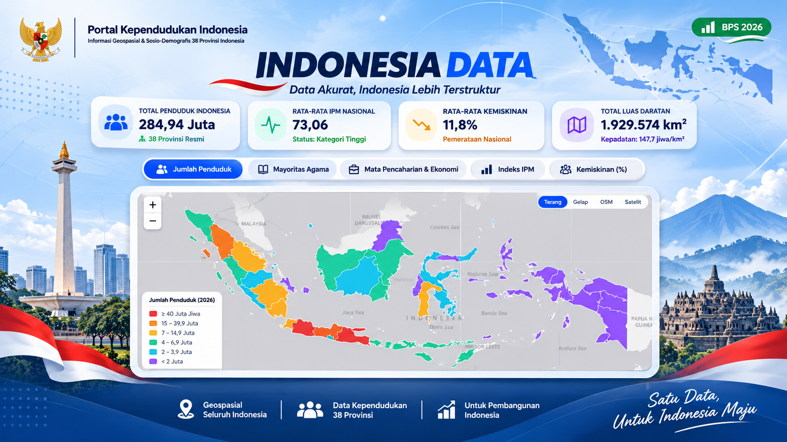

Peta Kependudukan 38 Provinsi Indonesia
National Spatial Portal · 2026
Portal spasial nasional untuk visualisasi kependudukan, IPM, kemiskinan, dan komposisi demografi 38 provinsi Indonesia lengkap dengan fitur komparasi dan ekspor tabel.
- Cakupan lengkap 38 provinsi termasuk 4 DOB Papua
- Komparasi antar-provinsi & ekspor CSV/JSON
- Grafik komposisi demografi & statistik interaktif
Leaflet.js
38 Provinsi
Tabel & CSV
Buka Peta Nasional